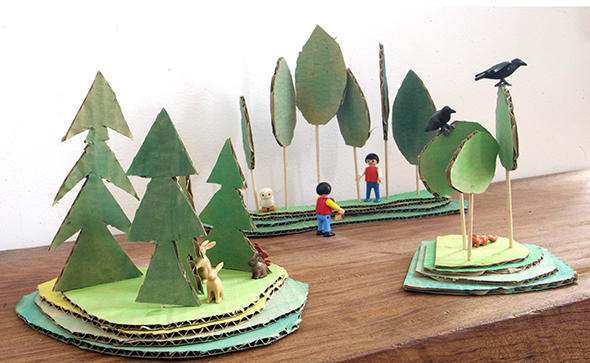

Diese Playmobile Kinder spielen in einer Landschaft aus Wald und Bergen. In die Berge ( aus mehreren Schichten Karton) steckt man Holzspiesse, auf die man wieder herum die Baumkronen steckt!



Für die Kleinsten, die am Sonntag zu den Trobades kommen, haben die Schüler der 6ten Klasse CEIP SANTA TERESA ein memory Spiel vorbereitet. 2 Sardinen müssen…
Weiterlesen →
Für die Größeren, die am Sonntag zu den Trobades kommen, haben die Schüler der 6ten Klasse CEIP SANTA TERESA eine Bastelei in einer Dose vorbereitet. Du…
Weiterlesen →
Die grössten Wackelaugen der Welt. Man braucht nur durchsichtige Joghurtbecherdeckel weisse Pappe und grosse Knöpfe. Die Deckel benutzt man als Schablone auf der Pappe und klebt…
Weiterlesen →
Man glaubt es kaum! Ein Experiment, was ich auch für ungeduldige Kinder lohnt! Man schneidet den oberen Teil einer Wurzel ( hier Rote Beete und Mohrrübe…
Weiterlesen →
Hier eine einfache Idee für ein Geschenk. Es ist ausserdem schnell gemacht. Man rollt ein Stück Knete in der Farbe, in der man den Hund haben…
Weiterlesen →
Dezente Türblatt Verzierung. Ob weisse oder Holztür, mit Washi Tape hat die Tür in 2 Minuten ein ganz eigenen Stil!
Weiterlesen →